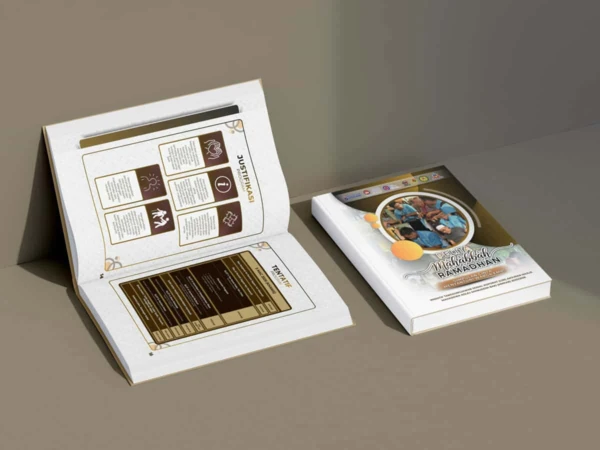
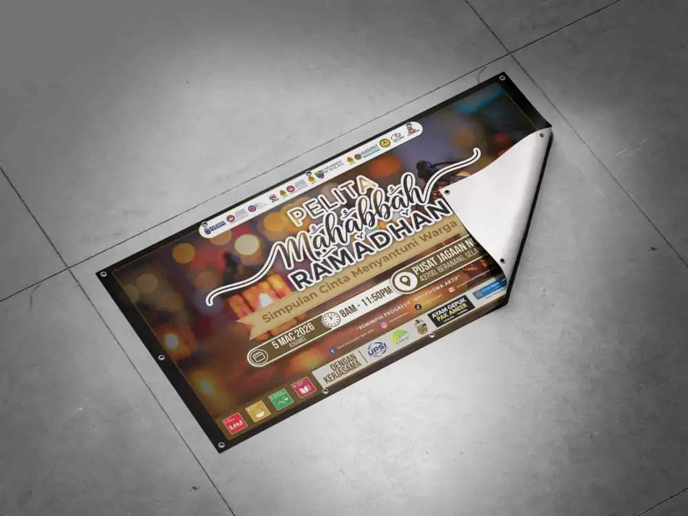
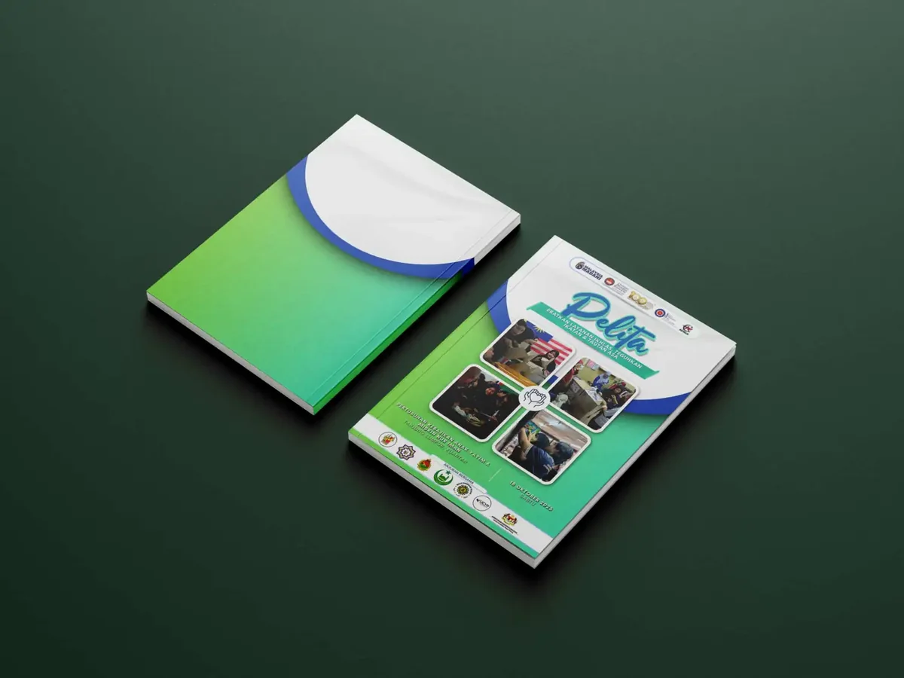
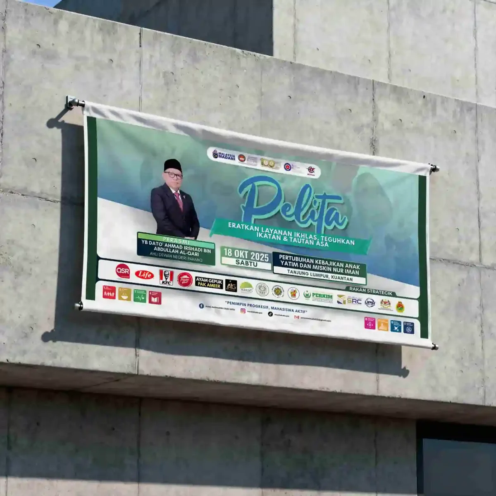
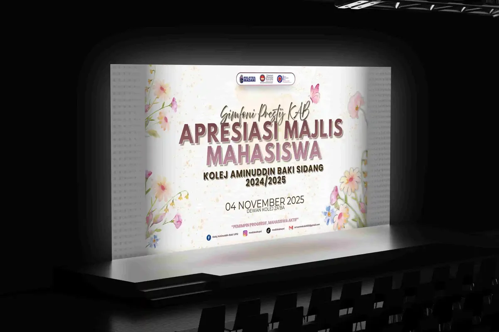
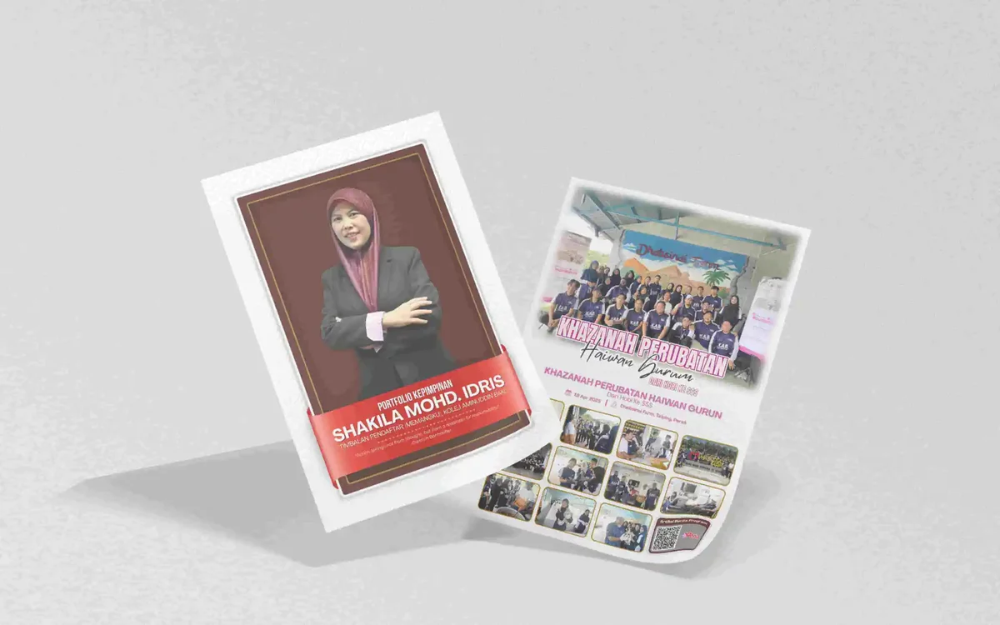
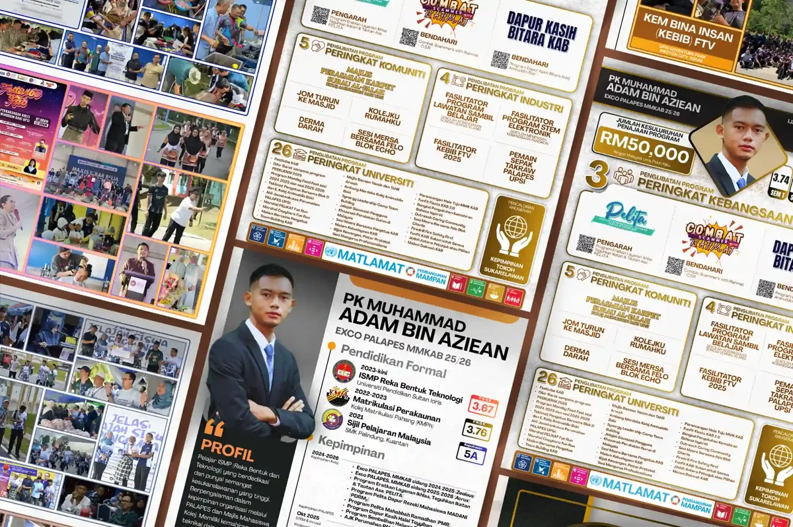

Graphics Design

Corporate Proposal | Pelita Mahabbah Ramadhan (PMR)
Transforming a vision and idea, into presentable and professional documentation; complete with custom design, thematic consistentcy, and high-quality support.

Printable Design | Pelita Mahabbah Ramadhan (PMR)
Design beautiful and dynamic-oriented design of posters, banners, standies, as well as social media suites based on consistency and quality.

Corporate Proposal | PELITA
Conceptualized and designed a professional multi-page layout to elevate the program’s sponsorship acquisition strategy.

Multimedia Design Suites | PELITA
Design a collection of multimedia resources both digitally, and for printable media that in tandem with the client's preferences and requirement with upmost quality and professionalism.

Digital Graphics Design | Simfoni Prestij KAB
A collection of graphics design project that serve as the digital backdrop for Kolej Aminuddin Baki (KAB)'s program "Simfoni Prestij KAB".

Documented Professionalism | Resume Design
Full fledge professional resume compact with information and cohesive design.

Multi-profession Resume Design
A set of corporate-ready resume and CV carefully crafted for upmost profesionalism and clarity

Company Business & Proposal Design | Rubhea Resources
High level service of business and proposal design for Rubhea Resources in graphics design and visual communication along side extensive documentation service.